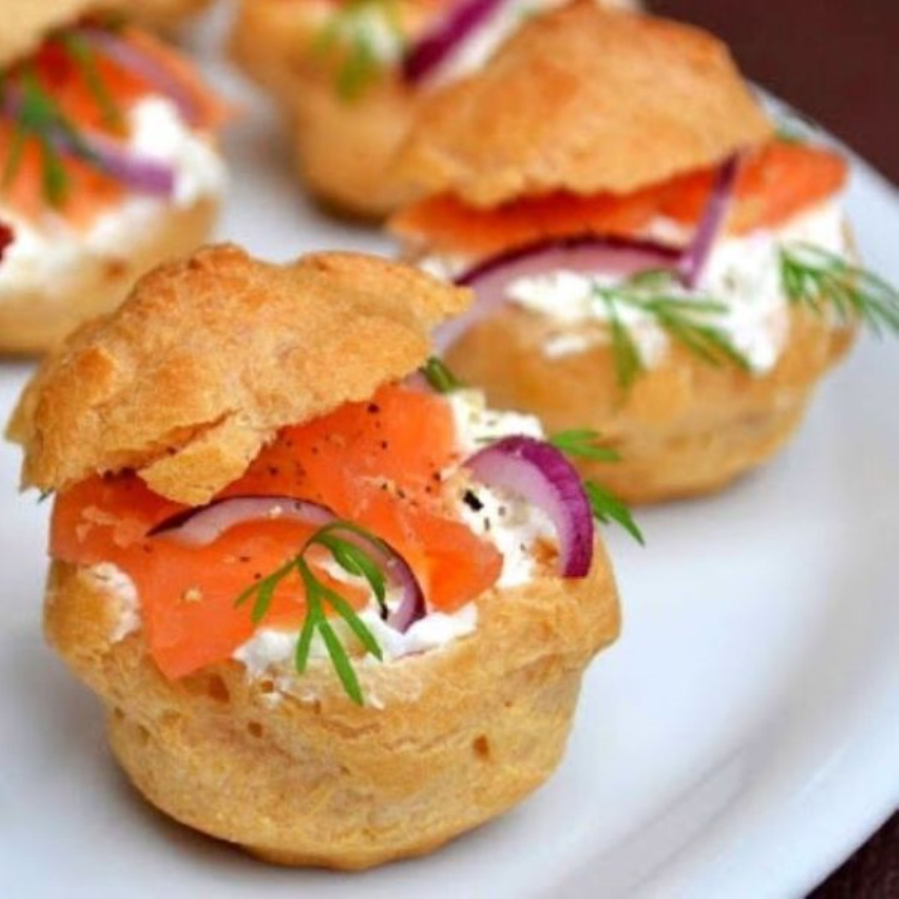

Ingredients
Pour la pâte à choux
4 oeufs
120 g de beurre
140 g de farine
½ c. à c. de sel ou sel fin
Pour la garniture
25 cl de crème fraîche
Moutarde
Citron
Poivre
150 g de saumon fumé
Ciboulette
Sel
Matériel
Casserole
Grille de refroidissement
Poche à douille
Four
Plaque de cuisson pour four